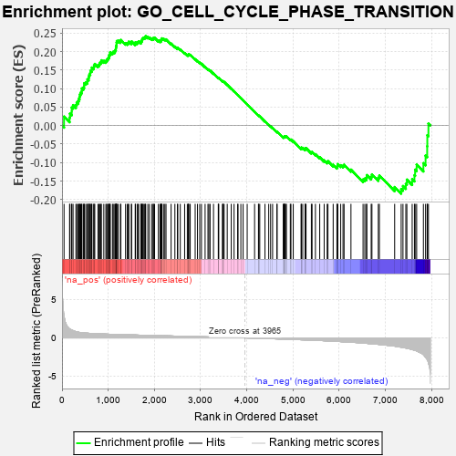

| | | Dataset | 7d |
| Phenotype | NoPhenotypeAvailable |
| Upregulated in class | na_pos |
| GeneSet | GO_CELL_CYCLE_PHASE_TRANSITION |
| Enrichment Score (ES) | 0.24152415 |
| Normalized Enrichment Score (NES) | 1.047521 |
| Nominal p-value | 0.35 |
| FDR q-value | 0.68516463 |
| FWER p-Value | 1.0 |
Table: GSEA Results Summary

Fig 1: Enrichment plot: GO_CELL_CYCLE_PHASE_TRANSITION
Profile of the Running ES Score & Positions of GeneSet Members on the Rank Ordered List
| PROBE | GENE SYMBOL | GENE_TITLE | RANK IN GENE LIST | RANK METRIC SCORE | RUNNING ES | CORE ENRICHMENT | | 1 | PCBP4 | | | 44 | 2.875 | 0.0243 | Yes |
| 2 | TEX14 | | | 164 | 1.179 | 0.0213 | Yes |
| 3 | BUB3 | | | 172 | 1.143 | 0.0323 | Yes |
| 4 | RHOU | | | 210 | 1.031 | 0.0382 | Yes |
| 5 | SPDYA | | | 211 | 1.026 | 0.0489 | Yes |
| 6 | CDC45 | | | 239 | 0.950 | 0.0553 | Yes |
| 7 | CCNH | | | 301 | 0.817 | 0.0560 | Yes |
| 8 | KLF11 | | | 318 | 0.788 | 0.0621 | Yes |
| 9 | CNOT7 | | | 348 | 0.750 | 0.0662 | Yes |
| 10 | HUS1 | | | 362 | 0.735 | 0.0722 | Yes |
| 11 | CLSPN | | | 379 | 0.719 | 0.0776 | Yes |
| 12 | BAX | | | 387 | 0.711 | 0.0841 | Yes |
| 13 | NBN | | | 405 | 0.696 | 0.0892 | Yes |
| 14 | MCM10 | | | 427 | 0.673 | 0.0935 | Yes |
| 15 | CCNB2 | | | 429 | 0.672 | 0.1004 | Yes |
| 16 | CNOT6 | | | 462 | 0.655 | 0.1031 | Yes |
| 17 | ORC3 | | | 479 | 0.644 | 0.1077 | Yes |
| 18 | CDC20 | | | 480 | 0.644 | 0.1144 | Yes |
| 19 | CNOT2 | | | 514 | 0.625 | 0.1167 | Yes |
| 20 | MCM2 | | | 546 | 0.614 | 0.1191 | Yes |
| 21 | ORC2 | | | 550 | 0.613 | 0.1251 | Yes |
| 22 | APEX1 | | | 577 | 0.604 | 0.1280 | Yes |
| 23 | CCNB1 | | | 581 | 0.601 | 0.1339 | Yes |
| 24 | RBL2 | | | 593 | 0.596 | 0.1387 | Yes |
| 25 | MCM7 | | | 612 | 0.591 | 0.1425 | Yes |
| 26 | NDC80 | | | 616 | 0.590 | 0.1483 | Yes |
| 27 | PLRG1 | | | 644 | 0.579 | 0.1509 | Yes |
| 28 | MCM8 | | | 646 | 0.578 | 0.1567 | Yes |
| 29 | CDK7 | | | 686 | 0.564 | 0.1576 | Yes |
| 30 | MRE11 | | | 693 | 0.560 | 0.1627 | Yes |
| 31 | CDC6 | | | 709 | 0.557 | 0.1665 | Yes |
| 32 | RAD21 | | | 779 | 0.538 | 0.1633 | Yes |
| 33 | BLM | | | 804 | 0.531 | 0.1657 | Yes |
| 34 | RPA1 | | | 817 | 0.527 | 0.1697 | Yes |
| 35 | RFWD3 | | | 843 | 0.521 | 0.1719 | Yes |
| 36 | RPA2 | | | 851 | 0.519 | 0.1764 | Yes |
| 37 | STOX1 | | | 905 | 0.506 | 0.1748 | Yes |
| 38 | CCND2 | | | 949 | 0.496 | 0.1744 | Yes |
| 39 | ZPR1 | | | 967 | 0.491 | 0.1774 | Yes |
| 40 | CDK17 | | | 985 | 0.487 | 0.1803 | Yes |
| 41 | MEN1 | | | 1003 | 0.483 | 0.1831 | Yes |
| 42 | PSMG2 | | | 1018 | 0.480 | 0.1863 | Yes |
| 43 | ORC5 | | | 1022 | 0.479 | 0.1909 | Yes |
| 44 | AKT1 | | | 1040 | 0.476 | 0.1937 | Yes |
| 45 | RCC1 | | | 1043 | 0.475 | 0.1984 | Yes |
| 46 | CDK10 | | | 1092 | 0.465 | 0.1970 | Yes |
| 47 | RINT1 | | | 1110 | 0.462 | 0.1996 | Yes |
| 48 | MCM3 | | | 1142 | 0.456 | 0.2004 | Yes |
| 49 | PSMD7 | | | 1152 | 0.454 | 0.2040 | Yes |
| 50 | CKS2 | | | 1165 | 0.452 | 0.2071 | Yes |
| 51 | CCNY | | | 1168 | 0.451 | 0.2116 | Yes |
| 52 | ERCC3 | | | 1173 | 0.451 | 0.2157 | Yes |
| 53 | TFDP1 | | | 1180 | 0.450 | 0.2197 | Yes |
| 54 | PSMD2 | | | 1181 | 0.450 | 0.2243 | Yes |
| 55 | NEDD1 | | | 1186 | 0.449 | 0.2285 | Yes |
| 56 | CDK14 | | | 1217 | 0.444 | 0.2293 | Yes |
| 57 | CDC73 | | | 1265 | 0.436 | 0.2278 | Yes |
| 58 | CNOT3 | | | 1274 | 0.435 | 0.2313 | Yes |
| 59 | TAF2 | | | 1375 | 0.415 | 0.2227 | Yes |
| 60 | CARM1 | | | 1413 | 0.408 | 0.2222 | Yes |
| 61 | CHMP7 | | | 1435 | 0.403 | 0.2237 | Yes |
| 62 | RBX1 | | | 1445 | 0.401 | 0.2267 | Yes |
| 63 | E2F4 | | | 1501 | 0.390 | 0.2237 | Yes |
| 64 | MCM6 | | | 1506 | 0.389 | 0.2273 | Yes |
| 65 | CDC27 | | | 1585 | 0.377 | 0.2212 | Yes |
| 66 | PAF1 | | | 1588 | 0.376 | 0.2248 | Yes |
| 67 | CDK4 | | | 1626 | 0.370 | 0.2239 | Yes |
| 68 | DDB1 | | | 1642 | 0.366 | 0.2258 | Yes |
| 69 | ORC1 | | | 1661 | 0.363 | 0.2273 | Yes |
| 70 | TPX2 | | | 1708 | 0.355 | 0.2251 | Yes |
| 71 | ERCC2 | | | 1712 | 0.354 | 0.2284 | Yes |
| 72 | KMT2E | | | 1730 | 0.350 | 0.2298 | Yes |
| 73 | ESPL1 | | | 1734 | 0.349 | 0.2331 | Yes |
| 74 | MRNIP | | | 1743 | 0.346 | 0.2356 | Yes |
| 75 | CCNG2 | | | 1761 | 0.344 | 0.2370 | Yes |
| 76 | LSM10 | | | 1783 | 0.340 | 0.2379 | Yes |
| 77 | RAD17 | | | 1804 | 0.336 | 0.2388 | Yes |
| 78 | PSMD4 | | | 1811 | 0.335 | 0.2415 | Yes |
| 79 | PSMD6 | | | 1858 | 0.326 | 0.2390 | No |
| 80 | CUL3 | | | 1893 | 0.321 | 0.2380 | No |
| 81 | CUL5 | | | 1947 | 0.314 | 0.2344 | No |
| 82 | ZW10 | | | 1973 | 0.309 | 0.2344 | No |
| 83 | BRSK2 | | | 1979 | 0.308 | 0.2370 | No |
| 84 | FOXO4 | | | 2004 | 0.304 | 0.2371 | No |
| 85 | CENPE | | | 2086 | 0.293 | 0.2297 | No |
| 86 | INO80 | | | 2120 | 0.288 | 0.2285 | No |
| 87 | JADE1 | | | 2141 | 0.286 | 0.2289 | No |
| 88 | PSME4 | | | 2143 | 0.285 | 0.2317 | No |
| 89 | DTL | | | 2154 | 0.284 | 0.2334 | No |
| 90 | CNOT4 | | | 2161 | 0.283 | 0.2356 | No |
| 91 | ATAD5 | | | 2197 | 0.277 | 0.2339 | No |
| 92 | CDK2 | | | 2226 | 0.272 | 0.2332 | No |
| 93 | PSMF1 | | | 2251 | 0.268 | 0.2329 | No |
| 94 | SIN3A | | | 2361 | 0.251 | 0.2215 | No |
| 95 | MTA3 | | | 2443 | 0.237 | 0.2135 | No |
| 96 | MELK | | | 2499 | 0.227 | 0.2088 | No |
| 97 | CDT1 | | | 2505 | 0.226 | 0.2105 | No |
| 98 | PSMD5 | | | 2560 | 0.218 | 0.2059 | No |
| 99 | VPS4A | | | 2654 | 0.205 | 0.1960 | No |
| 100 | PHB2 | | | 2712 | 0.197 | 0.1908 | No |
| 101 | DCTN3 | | | 2731 | 0.193 | 0.1905 | No |
| 102 | CUL1 | | | 2735 | 0.193 | 0.1921 | No |
| 103 | TPRA1 | | | 2745 | 0.192 | 0.1929 | No |
| 104 | RIOK2 | | | 2775 | 0.187 | 0.1911 | No |
| 105 | CUL2 | | | 2882 | 0.169 | 0.1793 | No |
| 106 | ACVR1 | | | 2932 | 0.161 | 0.1747 | No |
| 107 | UBE2S | | | 2980 | 0.153 | 0.1702 | No |
| 108 | BRD7 | | | 3018 | 0.147 | 0.1670 | No |
| 109 | CUL4A | | | 3097 | 0.137 | 0.1584 | No |
| 110 | FOXN3 | | | 3159 | 0.129 | 0.1519 | No |
| 111 | PSMD9 | | | 3179 | 0.125 | 0.1507 | No |
| 112 | FZR1 | | | 3205 | 0.122 | 0.1488 | No |
| 113 | CTDP1 | | | 3279 | 0.109 | 0.1406 | No |
| 114 | PPAT | | | 3382 | 0.091 | 0.1284 | No |
| 115 | DDX3X | | | 3388 | 0.091 | 0.1287 | No |
| 116 | ORC4 | | | 3391 | 0.090 | 0.1294 | No |
| 117 | CNOT1 | | | 3473 | 0.081 | 0.1198 | No |
| 118 | CDK5 | | | 3480 | 0.080 | 0.1199 | No |
| 119 | GLI1 | | | 3489 | 0.079 | 0.1197 | No |
| 120 | XPC | | | 3509 | 0.076 | 0.1180 | No |
| 121 | LCMT1 | | | 3576 | 0.063 | 0.1102 | No |
| 122 | SKP1 | | | 3663 | 0.049 | 0.0997 | No |
| 123 | CDC16 | | | 3724 | 0.038 | 0.0923 | No |
| 124 | SPAST | | | 3801 | 0.027 | 0.0828 | No |
| 125 | SFI1 | | | 3810 | 0.026 | 0.0821 | No |
| 126 | NEK2 | | | 3871 | 0.016 | 0.0745 | No |
| 127 | HINFP | | | 3920 | 0.006 | 0.0684 | No |
| 128 | SYF2 | | | 4008 | -0.009 | 0.0574 | No |
| 129 | GFI1 | | | 4168 | -0.037 | 0.0373 | No |
| 130 | RPTOR | | | 4252 | -0.050 | 0.0272 | No |
| 131 | PCID2 | | | 4258 | -0.051 | 0.0270 | No |
| 132 | PSME3 | | | 4280 | -0.056 | 0.0249 | No |
| 133 | CCNJ | | | 4393 | -0.075 | 0.0113 | No |
| 134 | EPS8 | | | 4474 | -0.088 | 0.0020 | No |
| 135 | PINX1 | | | 4515 | -0.097 | -0.0022 | No |
| 136 | APC | | | 4558 | -0.107 | -0.0065 | No |
| 137 | TAF10 | | | 4652 | -0.128 | -0.0171 | No |
| 138 | PPME1 | | | 4655 | -0.129 | -0.0160 | No |
| 139 | PIM2 | | | 4789 | -0.155 | -0.0315 | No |
| 140 | TERT | | | 4801 | -0.157 | -0.0313 | No |
| 141 | PPM1D | | | 4805 | -0.158 | -0.0300 | No |
| 142 | FBXW7 | | | 4816 | -0.161 | -0.0296 | No |
| 143 | TAOK3 | | | 4823 | -0.162 | -0.0287 | No |
| 144 | TIPIN | | | 4839 | -0.166 | -0.0289 | No |
| 145 | BCAT1 | | | 4857 | -0.168 | -0.0293 | No |
| 146 | EP300 | | | 4941 | -0.186 | -0.0380 | No |
| 147 | PRKDC | | | 4955 | -0.189 | -0.0377 | No |
| 148 | KLF4 | | | 5005 | -0.198 | -0.0420 | No |
| 149 | DCTN2 | | | 5175 | -0.243 | -0.0612 | No |
| 150 | NEK10 | | | 5180 | -0.244 | -0.0591 | No |
| 151 | ATM | | | 5210 | -0.249 | -0.0603 | No |
| 152 | PTEN | | | 5262 | -0.261 | -0.0641 | No |
| 153 | CDK1 | | | 5264 | -0.262 | -0.0615 | No |
| 154 | CEP70 | | | 5282 | -0.267 | -0.0609 | No |
| 155 | PLK4 | | | 5397 | -0.295 | -0.0725 | No |
| 156 | LATS1 | | | 5412 | -0.298 | -0.0712 | No |
| 157 | CEP76 | | | 5485 | -0.315 | -0.0772 | No |
| 158 | NDE1 | | | 5578 | -0.339 | -0.0855 | No |
| 159 | PSMD1 | | | 5674 | -0.367 | -0.0938 | No |
| 160 | ENSA | | | 5739 | -0.388 | -0.0980 | No |
| 161 | CDC23 | | | 5756 | -0.394 | -0.0960 | No |
| 162 | CDK16 | | | 5869 | -0.425 | -0.1060 | No |
| 163 | DCTN1 | | | 5950 | -0.454 | -0.1115 | No |
| 164 | CNTRL | | | 5961 | -0.459 | -0.1080 | No |
| 165 | CENPJ | | | 5968 | -0.460 | -0.1040 | No |
| 166 | CKAP5 | | | 6032 | -0.482 | -0.1071 | No |
| 167 | PLK1 | | | 6082 | -0.500 | -0.1082 | No |
| 168 | CCNG1 | | | 6105 | -0.507 | -0.1057 | No |
| 169 | TFAP4 | | | 6254 | -0.556 | -0.1190 | No |
| 170 | CEP41 | | | 6516 | -0.669 | -0.1455 | No |
| 171 | MIIP | | | 6554 | -0.686 | -0.1431 | No |
| 172 | ALMS1 | | | 6590 | -0.704 | -0.1403 | No |
| 173 | TPR | | | 6597 | -0.709 | -0.1337 | No |
| 174 | OFD1 | | | 6692 | -0.758 | -0.1379 | No |
| 175 | EGFR | | | 6708 | -0.765 | -0.1319 | No |
| 176 | CEP72 | | | 6846 | -0.839 | -0.1407 | No |
| 177 | NINL | | | 6869 | -0.851 | -0.1347 | No |
| 178 | CETN2 | | | 7200 | -1.070 | -0.1660 | No |
| 179 | OVOL1 | | | 7341 | -1.214 | -0.1713 | No |
| 180 | FBXL7 | | | 7380 | -1.245 | -0.1633 | No |
| 181 | CASP2 | | | 7442 | -1.322 | -0.1573 | No |
| 182 | CEP78 | | | 7464 | -1.354 | -0.1459 | No |
| 183 | NEK11 | | | 7579 | -1.521 | -0.1447 | No |
| 184 | PKD1 | | | 7628 | -1.611 | -0.1341 | No |
| 185 | TAF1 | | | 7643 | -1.633 | -0.1189 | No |
| 186 | KDM8 | | | 7676 | -1.695 | -0.1054 | No |
| 187 | PKD2 | | | 7822 | -2.167 | -0.1015 | No |
| 188 | CALM3 | | | 7869 | -2.525 | -0.0811 | No |
| 189 | PLCB1 | | | 7904 | -2.841 | -0.0559 | No |
| 190 | PSMD3 | | | 7907 | -2.887 | -0.0261 | No |
| 191 | PSMD8 | | | 7931 | -3.286 | 0.0051 | No |
Table: GSEA details [plain text format]
Fig 2: GO_CELL_CYCLE_PHASE_TRANSITION: Random ES distribution
Gene set null distribution of ES for GO_CELL_CYCLE_PHASE_TRANSITION